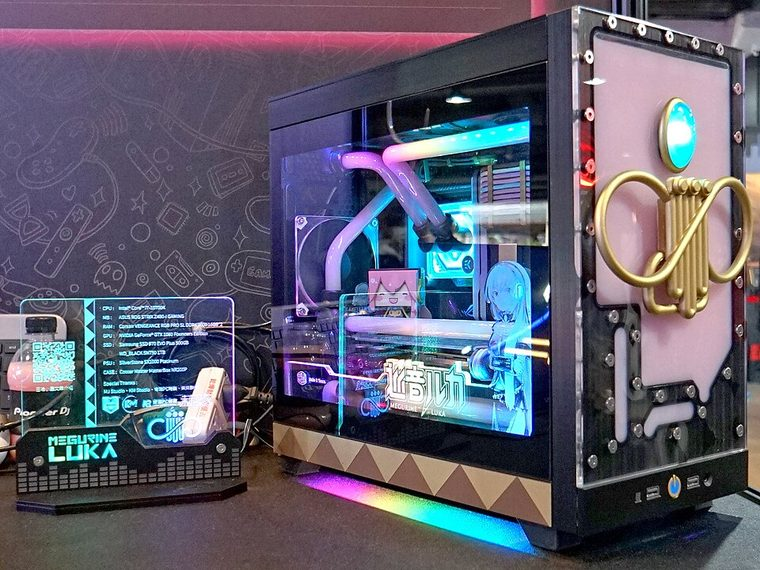

[ IDENTIFIED ENCLOSURE // NR200P MAX FIRST-GENERATION COMPLETE SFF PACKAGE ]
Cooler Master NR200P MAX
377 × 185 × 292 mm (L × W × H), approx. 18 L; GPU up to 336 mm length, triple-slot and 140 mm height envelope.

VARIANT / ARCHIVAL CAVEAT: NR200P MAX differs from MAX V2 and standard NR200P; V2 changes PSU/riser/cooling bundle. Identify label and keep bundled cable/riser and cooler parts together.
Mechanical specifications and fit
| Catalog identity | NR200P MAX first-generation complete SFF package |
|---|---|
| Dimensions and clearances | 377 × 185 × 292 mm (L × W × H), approx. 18 L; GPU up to 336 mm length, triple-slot and 140 mm height envelope. |
| Drive bays / mounts | Three dedicated 2.5-inch positions; two 3.5-inch may be mounted depending on GPU/radiator configuration. |
| Board, system and compatibility | Mini-ITX/Mini-DTX only. Supplied 850 W SFX PSU, 280 mm AIO and PCIe riser are integrated bundle elements, so replacement clearance differs from NR200P. |
| Revision / identification | NR200P MAX differs from MAX V2 and standard NR200P; V2 changes PSU/riser/cooling bundle. Identify label and keep bundled cable/riser and cooler parts together. |
Preservation and installation notes
NR200P MAX differs from MAX V2 and standard NR200P; V2 changes PSU/riser/cooling bundle. Identify label and keep bundled cable/riser and cooler parts together.
Mini-ITX/Mini-DTX only. Supplied 850 W SFX PSU, 280 mm AIO and PCIe riser are integrated bundle elements, so replacement clearance differs from NR200P.
- Capture the complete model/SKU, serial/date label, board assembly and bay/backplane/riser identifiers before disassembly; keep matched screws, trays, carriers, feet and cables with the case.
- Check the cited manual's specific build option before transferring hardware. Published maximum GPU, drive, fan or radiator capacity may not be simultaneous when a removable cage or alternative riser occupies that volume.
- For rack and vintage systems, preserve the exact rails, shields, doors, brackets and model-specific safety instructions; do not infer compatibility from a familiar brand or physical connector shape.
Manufacturer manuals and archival sources
- Cooler Master NR200P MAX manufacturer specificationsPrimary manufacturer or model-specific technical/manual reference used for the identification and mechanical data above.
- Cooler Master NR200P MAX V2 — distinguish later revisionSecond product manual, manufacturer resource or established technical archive; choose the exact regional SKU and revision.
When exact dimensions depend on configuration, the text says so; verify the measured specimen before making a fit or restoration decision.